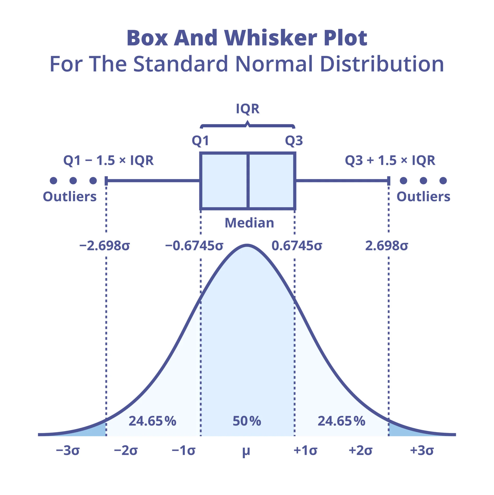
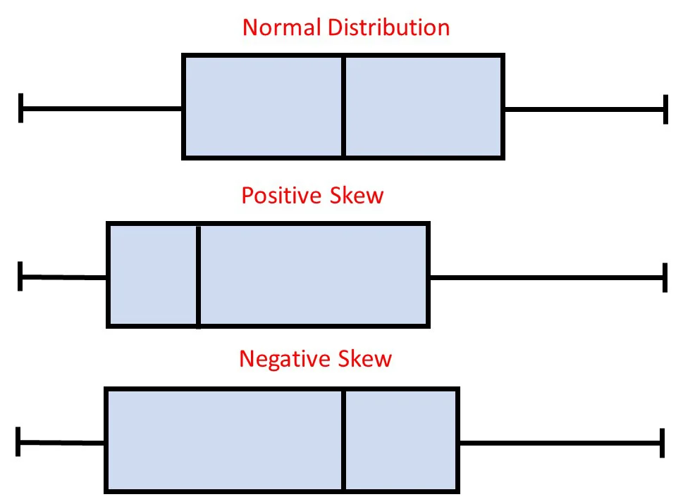

knitr::opts_chunk$set(echo = T)Measures of Variability
PSYC 2020-A01 / PSYC 6022-A01 | 2025-09-04 | Lab 3
Outline
- Assignment 2 Review
- More on types of data
- Labeling data
- Aggregating data
- Descriptives by group
- Weighted mean
Measures of Variability Review
Describe the “spread” or “dispersion” of the data


Measures of Variability Functions
testscores <- c(88, 93, 92, 99, 96)var(x) function
○
Standard Deviation: x = vector
sd(x) function
○
Interquartile Range: x = vector
IQR(x) function
○
x = title
○ Difference between the 3rd and 1st quantile (so 50% of the data within this range)
○ 25% of the data lower than the 1st quantile
○ 75% of the data lower than the 3rd quantile
○ IQR = 3rd - 1st
# let's look at some variances!
Quantiles: quantile() function
Object Types: Vector
We’ve already seen and used vectors
c(2, 3, 4, 2)[1] 2 3 4 2c("Cat", "Dog", "Bird")[1] "Cat" "Dog" "Bird"We know they can only hold one type of data
c("Cat", "Dog", 4)[1] "Cat" "Dog" "4" Shorthand for sequenced numbers:
1:10 [1] 1 2 3 4 5 6 7 8 9 10Object Types: Matrix
Like a vector, but multidimensional
Can only hold one type of data
○ Worse than a dataframe?
○ Okay! But pop up in function output often
○ So we need to know how to work with them
matrix(c(1, 2, 3, 4), nrow = 2) [,1] [,2]
[1,] 1 3
[2,] 2 4Default is to fill in columns first
matrix(c(1, 2, 3, 4), nrow = 2, byrow = T) [,1] [,2]
[1,] 1 2
[2,] 3 4Object Types: Matrix
Can give names
colnames() Function
mymatrix <- matrix(c(0, 1, 2,
1, 2, 3,
2, 3, 4),
nrow = 3, byrow = T)
colnames(mymatrix) <- c("Var1", "Var2", "Var3")
mymatrix Var1 Var2 Var3
[1,] 0 1 2
[2,] 1 2 3
[3,] 2 3 4Retrieves object column names, then assigns them something else
dimnames Argument
mymatrix <- matrix(c(0, 1, 2,
1, 2, 3,
2, 3, 4),
nrow = 3, byrow = T,
dimnames = list(NULL,
c("Var1", "Var2", "Var3")))
mymatrix Var1 Var2 Var3
[1,] 0 1 2
[2,] 1 2 3
[3,] 2 3 4Sets names while creating the matrix
Takes a list(row_names, colum_names)
Object Types: List
Limitations of vectors:
○ Can only hold one type of data
Enter the list
Can create by calling the list() function and giving it some objects
list(1, 2, "cat")[[1]]
[1] 1
[[2]]
[1] 2
[[3]]
[1] "cat"list(1:4, c("a", "b"))[[1]]
[1] 1 2 3 4
[[2]]
[1] "a" "b"Object Types: Dataframes
More review
Like matrices, but can hold different types of data
matrix(c("cat", 2, "dog", 2),
nrow = 2, byrow = T,
dimnames = list(NULL, c("Pet",
"Count"))) Pet Count
[1,] "cat" "2"
[2,] "dog" "2" mydataframe <- data.frame(
pet = c("cat", "dog"),
count = c(2, 2))
mydataframe pet count
1 cat 2
2 dog 2Indexing
To access some subset of an object (vector, list, dataframe, etc.)
We already know one! The $ operator indexes by selecting a column
mydataframe$pet[1] "cat" "dog"Indexing
To access some subset of an object (vector, list, dataframe, etc.)
Can also use brackets []
myvector <- c(2, 4, 6, 8)
myvector[1][1] 2Can select more than one position at a time
myvector[c(1, 2, 3)][1] 2 4 6myvector[1:3][1] 2 4 6Indexing
Need to account for multiple dimensions
Matrix: [element position] or [row, column]
mymatrix Var1 Var2 Var3
[1,] 0 1 2
[2,] 1 2 3
[3,] 2 3 4mymatrix[1][1] 0mymatrix[4][1] 1mymatrix[2, ]Var1 Var2 Var3
1 2 3 mymatrix[3, 2]Var2
3 Indexing
Dataframe: [column] or [row, column]
mydataframe pet count
1 cat 2
2 dog 2mydataframe[1] pet
1 cat
2 dogmydataframe["pet"] pet
1 cat
2 dogmydataframe$pet[1] "cat" "dog"mydataframe[2, "pet"][1] "dog"Can also do more than one element at a time:
mydataframe[1:2, "count"][1] 2 2Labeling Data
Adding meaningful labels or categories to your dataset.
Useful for organizing and interpreting your data.
○ E.g., Adding labels like “Pass” or “Fail” based on test scores.
id order rating
1 1 2 3
2 2 3 3
3 3 1 5
4 4 3 1
5 5 2 5 id order rating
1 1 Pasta Fair
2 2 Salad Fair
3 3 Pizza Excellent
4 4 Salad Very Poor
5 5 Pasta ExcellentKey Functions for Labeling Data
scores <- c(85, 60, 45, 70, 50)gender <- c(1, 2, 1, 2, 2)ifelse(test, yes, no)
For simple conditional labeling
cut()
For creating bins or ranges
factor()
Convert numeric or character data into labeled categories
# Labeling as Pass/Fail
labels <- ifelse(scores >= 60,
"Pass", "Fail")
# Combining into a data frame
data <- data.frame(Scores = scores,
Label = labels)
data Scores Label
1 85 Pass
2 60 Pass
3 45 Fail
4 70 Pass
5 50 Fail# Creating bins
categories <- cut(scores,
breaks = c(0, 50, 70, 100),
labels = c("Low", "Medium",
"High"))
# Combining into a data frame
data <- data.frame(Scores = scores,
Category = categories)
data Scores Category
1 85 High
2 60 Medium
3 45 Low
4 70 Medium
5 50 Low# Converting to factor with labels
gender_labeled <- factor(gender,
levels = c(1, 2),
labels = c("Male",
"Female"))
# Combine into a data frame
data <- data.frame(gender,
gender_labeled)
data gender gender_labeled
1 1 Male
2 2 Female
3 1 Male
4 2 Female
5 2 FemaleDescriptives by Group
Aggregation involves summarizing or grouping data based on certain variables.
Commonly used to calculate summary statistics like mean, variance, or sum for each group.
Benefits:
○ Data summary
○ Data simplification
○ Statistical analysis
○ Trend identification
○ Data privacy
○ Data-driven decisions
aggregate(y ~ group, FUN)
○
y = vector we want statistics for
○
group = vector with grouping data
○
FUN = function to apply
Descriptives by Group Example
# average Sepal Length by iris species?
Descriptives by Group Visualization
Why visualize aggregated data?
○ Makes group-level insights easier to interpret.
○ Highlights patterns, trends, and outliers in grouped data
○ Helps communicate findings effectively
Visualizations: Boxplots
Back to the iris dataset, distribution of Sepal Length by species
○ “Minimum”
○ 25th Quantile (Q1)
○ Median
○ 75th Quantile (Q3)
○ “Maximum”
○ Points representing outliers

○ Minimum: \(Q1 - 1.5 * IQR\)
○ Maximum: \(Q3 + 1.5 * IQR\)
Means that the whiskers contain ~99% of the data, rest are outliers
Visualizations: Boxplots
One more resource for boxplot anatomy

Visualizations: Boxplots…

Let’s Do Some Visualization
Base R Graphics: Boxplot
boxplot(x) function
Its arguments are:
Required arguments:
○
x = vector (variable) you want to plot
Optional arguments:
○
main = title
○
xlab = label for x-axis
○
ylab = label for y-axis
○
border = color for bar borders
○
col = color for bars
○
horizontal = T/F to switch

boxplot(iris$Sepal.Length,
main = "Boxplot of Sepal Length",
xlab = "Sepal Length",
border = "gray35",
col = "skyblue")Let’s Do Some Visualization
Base R Graphics: Boxplot
To group them, you can change the x to a “formula”
outcome_var ~ group_var
Just like we saw with aggregate()

boxplot(iris$Sepal.Length ~ iris$Species,
main = "Boxplot of Sepal Length by Species",
xlab = "Sepal Length",
border = "gray35",
col = "skyblue")Visualizations: Boxplot

No Assignment!
Don’t forget to sign up for posit::conf(2025) if you want to complete the extra credit assignment.